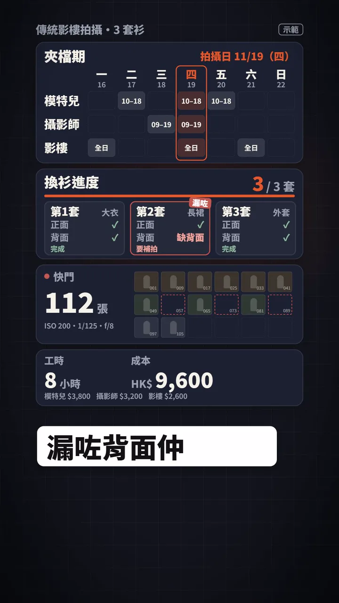
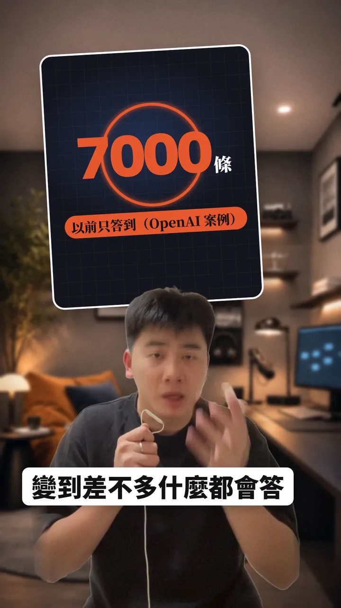
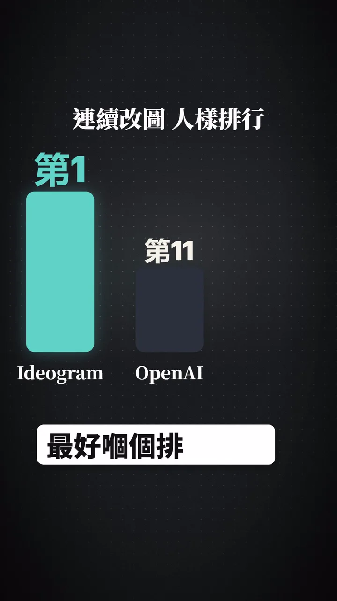
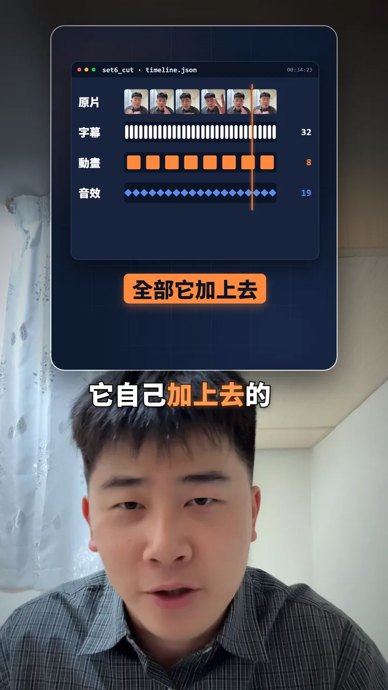
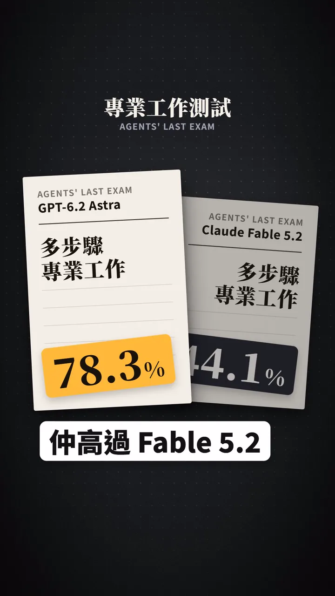
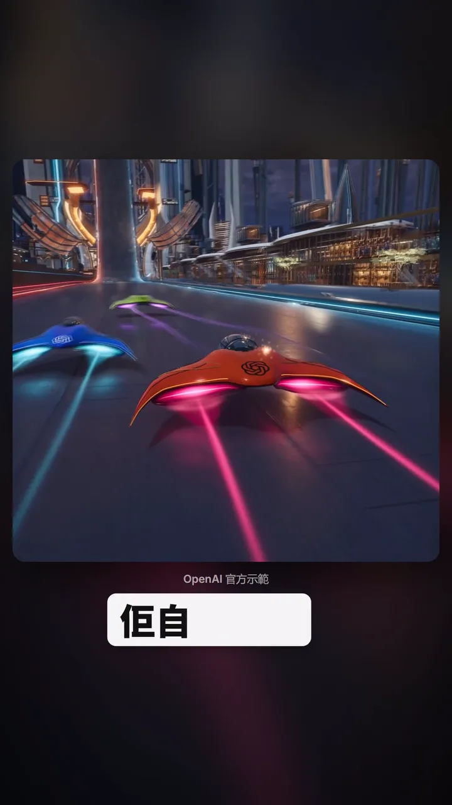

模組 02 · 影音與發佈
配套指南建置與同步
把內容更新、資料同步和靜態網站建置接起來，讓新資料可沿同一條流程發佈。
交付成果內容更新 → 網站部署
資料同步及頁面建置各自處理，更新內容時可以重用現有版面。

同步資料
腳本更新內容清單和需要的素材。
建立頁面
建置程式讀取清單，生成首頁和各內容頁。
自動部署
版本提交後由 Vercel 建置及發佈，方便追查每次更新。
- Node.js
- GitHub
- Vercel
影音與發佈 · 互動個案
把劇本、錄音對位、Remotion 程式動畫和 FFmpeg 聲音後製串成可分段重跑的短片流程，再接上配套指南和留言自動回覆。下方片段全部來自已發佈的成片。
ENGINEERING NOTES
作品集展示的動畫片段剪自 Gary 用這條流程製作並已發佈的 IG 短片：紙卡、數字滾動、逐格動畫和排名圖都是 Remotion 組件。發佈後的配套指南網站和關鍵字回覆屬同一條流程，列在下方組成模組。
以逐字時間碼對稿，根據人聲活動決定剪接位置。
共用時間軸驅動字幕和動畫。FFmpeg 處理音訊、調整人聲及合成輸出。
驗收成片規格，建置配套指南。關鍵字回覆服務按條件發送指南連結。
ENGINEERING REVIEW
已用這條流程製作並發佈 IG 短片；本頁片段剪自成片。
faster-whisper 取得字詞時間，對齊劇本。
以響度為準：只在有呼吸或長停頓的地方收窄，剪接點不可落在人聲上。
timeline.json 同時驅動 Remotion 字幕和動畫。
FFmpeg 把響度調到 -14 LUFS、真峰值 -1.5 dBTP，並在輸出檔上重新量度。
一個指令跑全部檢查，出 PASS／WARN／FAIL 表；有 FAIL 不准交片。
WARN 項逐個修改或寫明原因；豁免項由人看總覽圖確認。
每一步用甚麼、為甚麼，以及費用省在哪裏。表內只列做法；比較數字只寫已量度的。
| 步驟 | 用甚麼 | 為甚麼 | 省在哪裏 |
|---|---|---|---|
| 剪接、字幕、聲音、交片檢查 | 程式Python 與 FFmpeg | 有明確門檻的檢查交給程式，每次照樣重跑 | 重跑不用模型 |
| 逐字時間碼 | 本機模型本機 faster-whisper | 對齊劇本，作剪接的輔助 | 不用雲端轉錄 |
| 剪片 | 中階代理Sonnet 代理（medium） | 剪片、揀鏡頭、寫標籤交給 Sonnet；先試一條片看質素和用量，質素差就轉回 Opus | 日常剪片不用最強的模型 |
| 新動畫組件 | 高階代理Opus 代理（medium） | 只有寫新動畫程式才派；先查組件目錄，舊組件照例子改參數 | 用舊組件幾乎不需額外用量 |
| 審片 | 輕量模型兩輪 Haiku 代理（medium） | 第 1 輪查明顯錯誤，第 2 輪查設計並最後把關；第 2 輪於 2026-11-21 由 Sonnet 改為 Haiku；要看的格由主控先揀定 | 審片不用中高階模型 |
| 審稿 | 輕量模型Haiku 代理：盲聽、參考對照、邏輯 | 判定規則在 Haiku 上調校；參考對照和邏輯審查由 Sonnet 改為 Haiku，邏輯審查同時收窄查證範圍 | 審稿不用 Sonnet；頭幾條稿留意評分有否變鬆 |
判定規則只在 Haiku 上測試過，並因應測試結果改過兩次，仍未算驗證；頭 10 條新稿會留意有沒有誤判。代理一次只做一件事，避免讀入的內容越積越多。
採用響度決定剪接點
不採用直接用 Whisper 字邊界
首尾字曾被剪掉；改為以響度作準，Whisper 字時間只作輔助。
採用在成品檔上量度
不採用只量中間檔
限幅器曾兩次令響度偏離 0.7 dB；在輸出檔上量度，偏離超過 0.5 dB 就判 FAIL。
採用機器閘門
不採用人手逐條看
字幕闊度、第 0 格文字、空白卡、真人佔時等都有明確門檻，可重複檢查。
約 7,658 行 Python，分成對稿、剪接、母帶、閘門等可獨立重跑的步驟。
母帶目標；偏離超過 0.5 dB 即 FAIL。
本頁片段來自 8 條已發佈的 IG 短片。
| 可能出錯 | 防護 |
|---|---|
| 首尾字被剪 | 響度作準，尾音最多向外追 0.5 秒。 |
| 把開頭的手機敲擊聲剪入 | 開頭最多只向前追 0.15 秒。 |
| Whisper 漏字 | 沒有字的片段，只要有清楚人聲核心就保留。 |
| 響度偏離 | 在成品檔上重新量度，閘門判 FAIL。 |
# prep.py word_guard()：粵語的 Whisper 字邊界不可靠（字頭偏遲、尾音偏早），以響度作準
s0, e1 = ws[0][0], ws[-1][1]
na = min(a, s0 - 0.08) if s0 - a <= slack else s0 - pre # 只在有呼吸／長停頓時才收窄
nb = max(b, e1 + 0.10) if b - e1 <= slack else e1 + post
if ENERGY is not None: # 剪接點不可落在有人聲的位置：向外推到聲音消失
db, floor = ENERGY
v = lambda t: db[min(len(db) - 1, max(0, int(t * 100)))] >= floor + 12
while na > a and v(na - 0.01):
na -= 0.01
while nb < b and v(nb):
nb += 0.01
# gate.py：交片閘門，任何一項 FAIL 都不准交片
verdict = "FAIL（唔准交片）" if fails else ("PASS（有 WARN，要逐個改或者寫明原因）" if any(r[1] == "WARN" for r in rows) else "PASS")頁頂播放的片段全部剪自 Gary 以 AutoCut 流程製作並已發佈的 IG 短片，取畫面上半部的動畫區，無聲播放。除賽車畫面是螢幕錄影外，其餘都是由逐字時間碼驅動出場時間的程式動畫。






INTERACTIVE
先把錄音對齊劇本
拖動時間軸或選片段。留意字幕何時換行，以及畫面何時按標記觸發。
本頁以示例畫面示範 timeline.json 的段落、字幕區間與字詞時間碼。正式剪輯以 Remotion 渲染。
MODULES
這是一個完整工具，由 3 個模組組成。上方是主流程；以下每個模組各有用途、實作步驟和輸出，可直接跳到相應段落。
模組 02 · 影音與發佈
把內容更新、資料同步和靜態網站建置接起來，讓新資料可沿同一條流程發佈。
資料同步及頁面建置各自處理，更新內容時可以重用現有版面。
腳本更新內容清單和需要的素材。
建置程式讀取清單，生成首頁和各內容頁。
版本提交後由 Vercel 建置及發佈，方便追查每次更新。
模組 03 · 工作流程
將留言事件分流到相應回覆，依關鍵字和互動狀態決定下一步，減少逐次手動派發資料。
作品集只展示事件流程，不使用真實對話或帳戶資料。
Webhook 接收留言或按鈕事件。
比對該內容的關鍵字及對話狀態。
條件符合才傳送相應連結，事件處理與訊息發送分開。
展開查看每項測試驗證的行為。
同一則留言重送，沒有重複私訊。
自己的留言及回覆串不會觸發分流。
再次傳送提示和按鈕，保留筆記連結。
按下按鈕後傳送筆記連結。
原測試驗證 Webhook 與簽章。